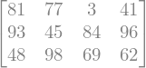
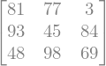

Matrix rank factorization¶
A matrix can be factorized as \(A = C*R\), where \(C\) is a basis of the column space, and \(R\) is row-reduced echelon form of \(A\) without zero rows [Str19]. All three matrices have the same rank
\[
rank(A) = rank(C) = rank(R)
\]
import numpy as np
from sympy import Matrix
from sympy.matrices import randMatrix
from sympy import init_printing
init_printing()
# a random matrix A
A = randMatrix(3,4)
A

R, rref_pivots = Matrix.rref(A)
print(f"pivots: {rref_pivots}\n" )
R
pivots: (0, 1, 2)
C = A[:, rref_pivots]
C

# verify A = C*R
A == C @ R
True